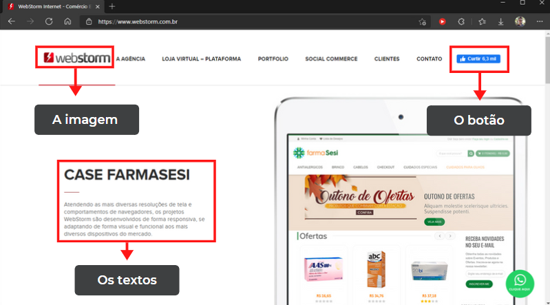
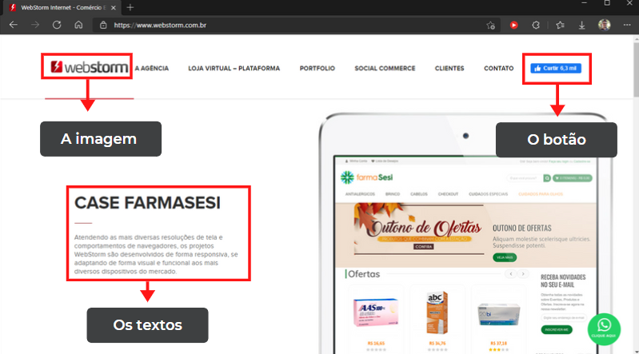
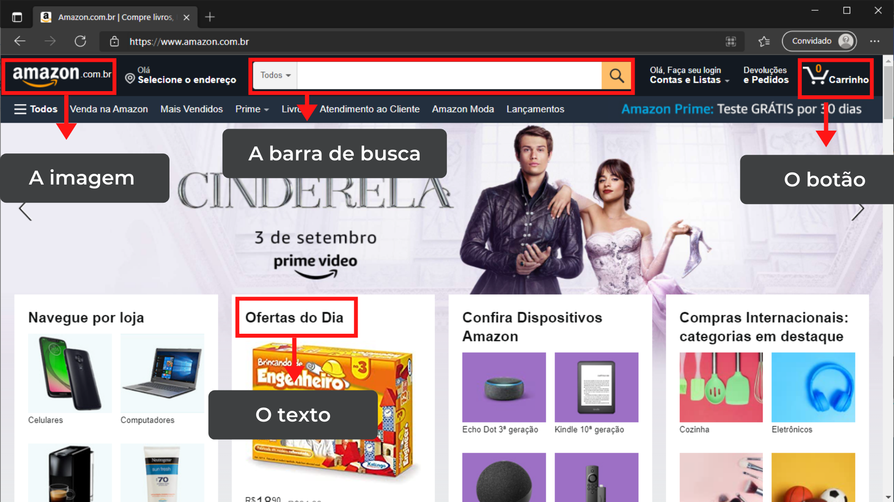
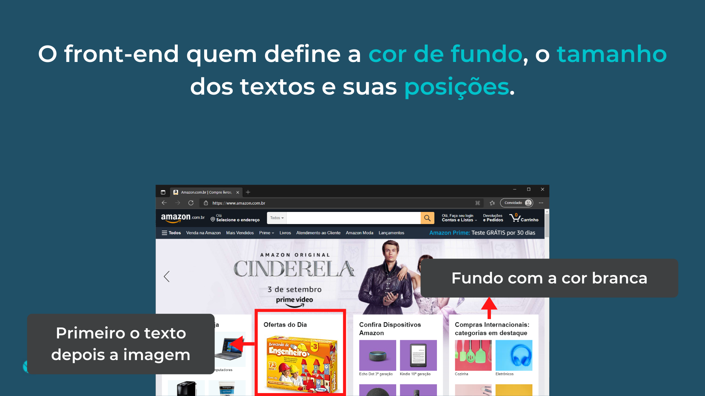
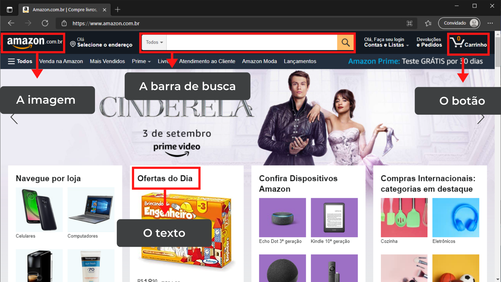
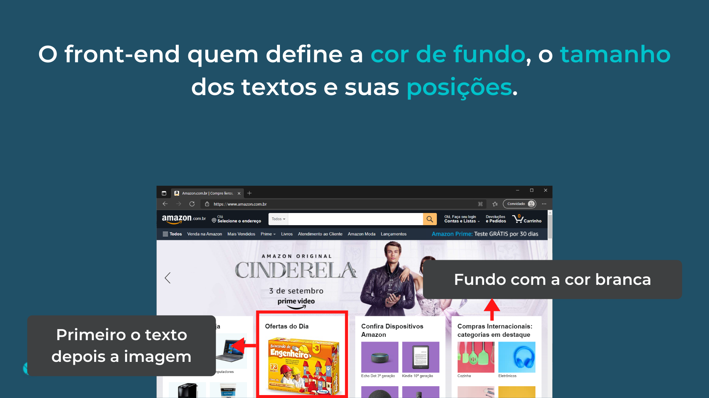
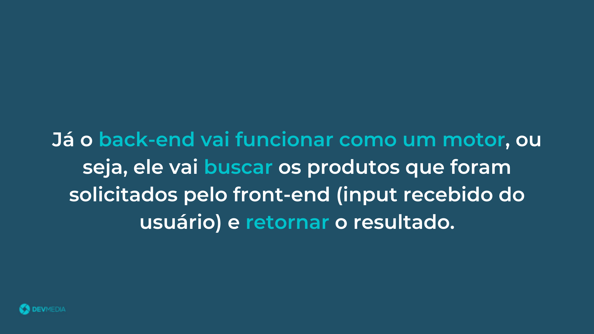
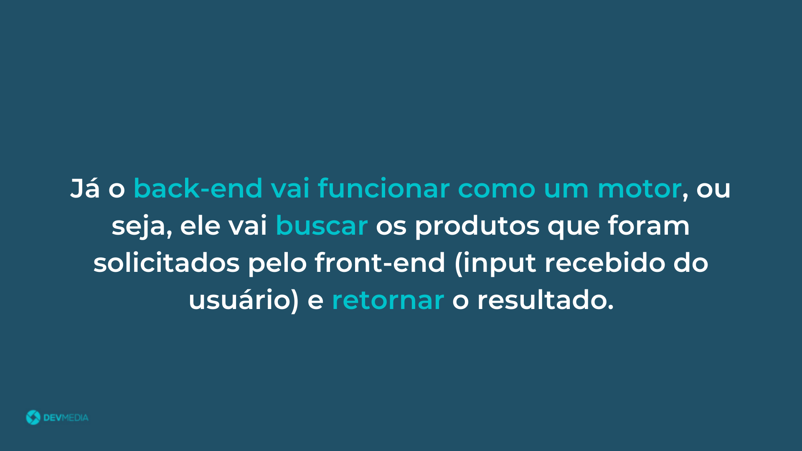

Exemplos práticos de front-end
Vamos analisar um exemplo real de site estático - neste exemplo,
o site https://www.webstorm.com.br/ - no flow abaixo:
Vamos analisar um exemplo real de site dinâmico, site Amazon , no flow abaixo:
Veja na Figura 6 as características que vimos do front-end.
Figura 6. Características do front-end
Seja em sites estáticos ou dinâmicos, o front-end vai sempre se preocupar com a aparência das informações que serão
exibidas para o usuário, dessa forma o usuário vai conseguir identificar do que se trata cada uma delas


 



 





 
